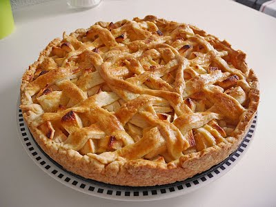
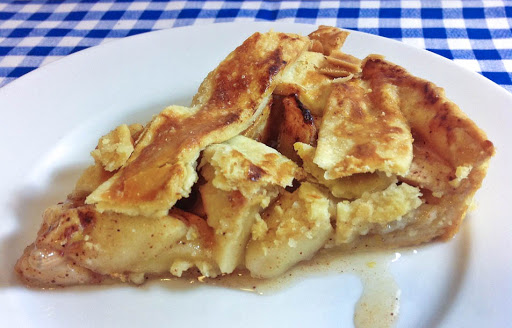

Půbodně francozský recept, upravený dle vlastních chutí a
postupů. Díky křehkému těstu a šťavnaté náplni je výborný v chladných
podzimních večerech
a protože obsahuje notnou dávku skořice, lze jej použít také jako
dobrotu o Vánocích, kdy si chceme odpočinout od tradičního cukroví v
podobě lineckého a vanilkových rohlíčků.
Suroviny na 8 porcí, koláčová forma o průměru 26 cm.
Jablka oloupejte, zbavte jadřince a nakrájejte na tenké plátky. Takto
nakrájená jablka dejte do mísy a zakápněte citronovou šťávou.
Dobře
promíchejte a nechejte hodinu odpočinout.
Do mísy dejte mouku, sůl, kostičky měkkého másla a rukou vypracujte na
drobenku. Poté přidejte studenou vodu a vypracujte soudržné těsto.
Těsto
rozdělte na 2 stejné díly a zabalte do fólie. Nechejte vychladit v
lednici 45 minut.
Po odpočinutí jablek k nim do mísy přidejte pudingový prášek,
skořicový cukr a třtinový cukr.
Promíchejte aby se vše spojilo a kablíčka byla hmotou obalená.
Vychlazené těsto nechejte chvíli odležet při pokojové teplotě. Jeden
díl rozválejte na plát o 2-3 cm větší než je forma.
Druhý plát
stejně, ale poté jej rozkrájejte na tenké pruhy. Tak abyste jimi
obsáhli celou plochu formy.
Připravený plát těsta přeneste do formy, rozprostřete a okraje přitlačte. Dno propíchejte vidličkou.
Přidejte jablka na těsto, uspořádejte ať příliš neční nad povrch. Posypejte mletou skořicí. Na povrchu jablek složte mřížku s pruhů těsta.
Těsto na povrchu potřete rozšlehaným vejcem. Dejte péct do předem
rozehřáté trouby na 170 stupňů a pečte 60 minut.
Pravidelně
kontrolujte a pokud by povrch těsta rychle zlátl, zakrýjte alobalem.

